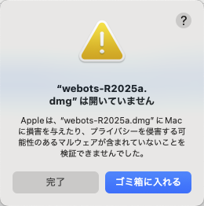
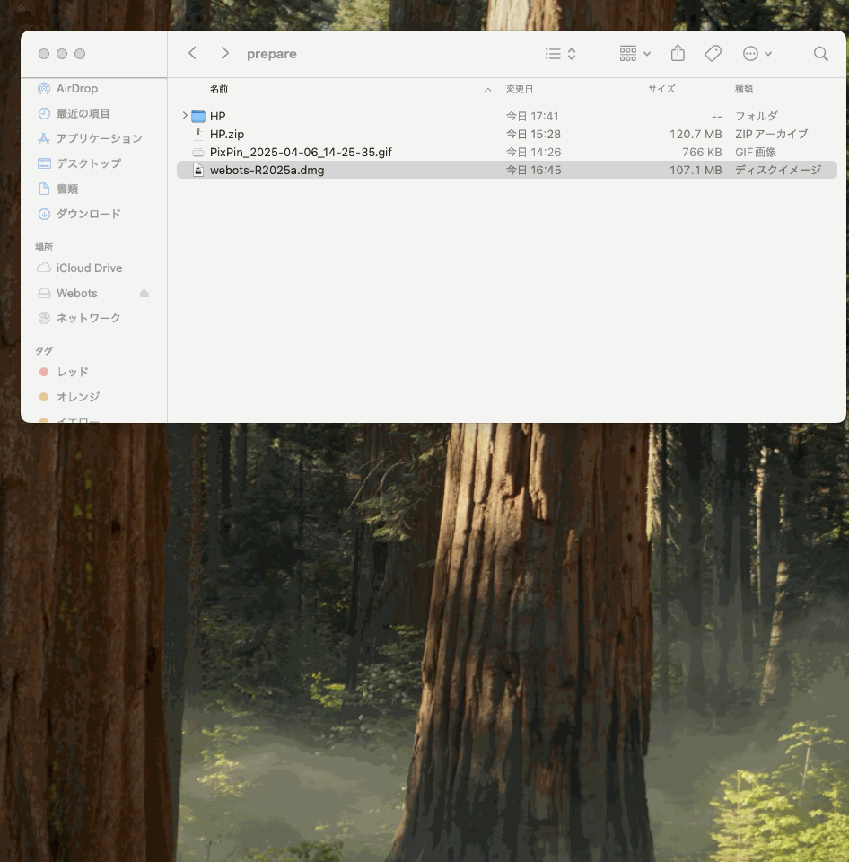

ロボット制御実験 環境構築ガイド (macOS版)
このガイドは、macOS上でシステム同定から強化学習までの全実験に必要なソフトウェア環境を構築する手順を説明します。主な構成要素は Webots シミュレータと Anaconda (Python) です。
1. Webots シミュレータのインストール
主に強化学習の実験で使用するロボットシミュレータ Webots をインストールします。
- Webots 公式サイトのダウンロードセクションへ進みます。
- macOS に対応したインストーラー (.dmg ファイル) をダウンロードします。
- ダウンロードした .dmg ファイルを開き、中の Webots アプリケーションアイコンを「アプリケーション (Applications)」フォルダにドラッグ＆ドロップします。
- インストール後、初回起動時にセキュリティに関する確認ダイアログが表示される場合があります。指示に従って許可してください。
1. Webots シミュレータのインストール
主に強化学習の実験で使用するロボットシミュレータ Webots をインストールします。
- Webots 公式サイトのダウンロードセクションへ進みます。
- macOS に対応したインストーラー (.dmg ファイル) をダウンロードします。
- ご自身のMacがAppleシリコン (M1/M2/M3など) かIntelかを確認し、対応するインストーラーを選択してください（サイトが自動判別する場合もあります）。
- ディスクイメージを開く試行: ダウンロードした .dmg ファイルをダブルクリックして開こうとします。
-
【セキュリティ警告が表示された場合の対処法】
macOS のセキュリティ機能により、以下のような警告が表示されて .dmg ファイルが開けない場合があります。（開発元が未確認などの理由）この警告ダイアログ自体には「開く」ボタンがありません。「ゴミ箱に入れる」は**クリックせず**、以下の手順を実行してください:(図：セキュリティ警告の例)
- メニューから「**システム設定**」を開きます。
- 左側のメニューで「**プライバシーとセキュリティ**」を選択します。
- 右側を下にスクロールし、「**セキュリティ**」セクションを探します。
- 「"webots-R....dmg"はブロックされました。開発元を確認できないため開けません。」のようなメッセージの横（または下）に表示されている**「このまま開く」**ボタンをクリックします。（管理者パスワードの入力が必要な場合があります）
- 「このまま開く」をクリックした後、**もう一度 Finder で .dmg ファイルをダブルクリック**します。今度はディスクイメージがマウントされ、中身が表示されるはずです。
以下のGIFは、このセキュリティ警告に対処し、.dmgファイルを開く手順を示しています:
 - アプリケーションのコピー: .dmg ファイルが正常に開き、中のファイルが表示されたら、Webots アプリケーションのアイコンを、同じウィンドウ内にある「アプリケーション (Applications)」フォルダのエイリアス（またはFinderのサイドバーにある「アプリケーション」フォルダ）にドラッグ＆ドロップしてコピーします。
- ディスクイメージの取り出し (推奨): コピーが完了したら、デスクトップまたはFinderのサイドバーに表示されている Webots のディスクイメージアイコンを右クリック（またはControl+クリック）し、「"Webots"を取り出す」を選択してアンマウント（取り出し）します。

2. 必要な Python パッケージのインストール
実験で使用するライブラリを control_lab 環境にインストールします。
- **ターミナル** を開き、**必ず control_lab 環境を有効化**してください (まだ有効でない場合):
conda activate control_lab(プロンプトが (control_lab) になっていることを確認) - 以下のコマンドを実行して、基本的な科学計算ライブラリをインストールします:
conda install numpy scipy matplotlib(確認プロンプトが出たらyを入力) - 次に、強化学習とハードウェア通信に必要なライブラリを pip を使ってインストールします:
pip install gymnasium stable-baselines3 torch torchvision torchaudio hidapi
3. 環境構築の最終確認
- **ターミナル** で、control_lab 環境がアクティブなことを確認します ((control_lab) が先頭に表示)。
- Python のバージョンを確認します:
python --version(3.9.x が表示されるはず) - インストールされた主要なパッケージを確認します (一部):
conda list '(numpy|matplotlib|scipy|gymnasium|stable-baselines3|torch|hidapi)'(リストに表示され、バージョン情報が出ていれば OK。pipで入れたものはpip listでも確認可) - Python インタプリタを起動し (python と入力)、ライブラリが import できるか試します:
import numpy import matplotlib import scipy import gymnasium import stable_baselines3 import torch import hid exit()(エラーなくプロンプト>>>に戻り、exit()で終了できれば成功) - 「アプリケーション」フォルダから Webots アプリケーションを起動できることを確認します。（この時点ではまだPython連携設定はしていません）
4. Webots と Anaconda Python 環境の連携設定 (macOS)
【macOS ユーザーへの重要注意】Webots から control_lab 環境の Python ライブラリ（特に Stable Baselines3 など）を利用するには、特別な設定が必要です。以下のいずれかの方法を行いますが、**方法2（ターミナルからの起動）を強く推奨します**。
手順1：Webots 環境設定で Python パスを指定 (動作しない可能性が高い)
この方法は、特に Conda 環境を使用する場合、macOS では正常に動作しないことが報告されています。Webots が正しいライブラリを見つけられない可能性があります。もし問題が発生した場合は、以下の「方法2」を試してください。
- control_lab 環境の Python パスを確認する:
- ターミナルを開き、control_lab 環境を有効化します:
conda activate control_lab - 以下のコマンドを実行して、Python 実行ファイルのフルパスを調べ、コピーします:
which python(例:/Users/yourname/anaconda3/envs/control_lab/bin/python)
- ターミナルを開き、control_lab 環境を有効化します:
- Webots の設定を変更する:
- Webots アプリケーションを（通常の方法で）起動します。 {/* Corrected menu path based on user snippet */}
- メニューバーから Webots -> Preferences... を選択。
- General タブの Python command フィールドに、上でコピーしたフルパスを貼り付けます。 {/* Changed "OK or Apply" to just "OK" based on user snippet */}
- OK をクリックして保存し、一度 Webots を**終了**します。
{/* Updated GIF filename and style based on user snippet */}
(図：Webots 設定画面での Python パス設定手順)
手順2：【macOS推奨】ターミナルから Webots を起動する (連携を有効にするため)
【重要】手順1で Webots の Preferences に Python パスを設定した場合でも、macOS で Webots を通常起動（アプリケーションフォルダや Dock から起動）すると、設定した Conda 環境 (control_lab) が**正しく認識・利用されず**、コントローラ実行時にライブラリが見つからないエラーが発生することがあります（理由は定かではありませんが、よく報告される現象です）。
この問題を回避し、設定した control_lab 環境とライブラリを Webots に確実に認識・利用させるためには、以下の手順で**ターミナルから Webots を起動する必要があります**。
- ターミナルを開く: macOS のターミナル.app を起動します。
- Conda 環境を有効化: 以下のコマンドで control_lab 環境を有効化します。
conda activate control_lab
(プロンプトの先頭が (control_lab) になっていることを確認) - Webots をターミナルから起動: **環境を有効化した、その同じターミナルウィンドウで**、以下のコマンドを実行して Webots を起動します。
/Applications/Webots.app/Contents/MacOS/webots上記は標準的なインストールパスです。もし異なる場所にインストールした場合や、バージョンによってパスが違う場合は、実際のパスに調整してください (Tabキー補完が使えるかもしれません)。
このようにターミナル経由で起動することで、Webots は control_lab 環境の Python 及びインストールされたライブラリ（numpy, stable-baselines3, torch, hidapi 等）を正しく見つけて使用することができます。（Preferences の設定がこの方法で初めて有効になると考えられます。）
{/* Note about inconvenience kept from user snippet */}
- 毎回このコマンドを打つのが面倒な場合は、このコマンドへのエイリアスを作成したり、PATH を通したりする方法もありますが、まずはこの直接的な方法で動作を確認してください。（詳細は下の【任意】設定を参照）
【任意】Webots 起動コマンドの簡略化
毎回ターミナルで /Applications/Webots.app/Contents/MacOS/webots と入力するのは少し長いと感じるかもしれません。以下は、単に webots と入力するだけで起動できるようにするための、**任意の設定**です（必須ではありません）。
エイリアス (alias) を設定する
エイリアスは、長いコマンドに短い別名を付ける機能です。以下のコマンドをターミナルで実行すると、webots という名前でフルパスのコマンドを実行できるようになります。(macOSの標準シェルzshの場合)
echo 'export PATH="/Applications/Webots.app/Contents/MacOS:$PATH"' >> ~/.zshrc
{/* Added Troubleshooting Note for Permission Denied */}
【エラーが出る場合】 もし上記のコマンド実行時に permission denied (権限拒否) エラーが出た場合は、方法 A と同様に ~/.zshrc ファイルの権限を確認・修正してください。
ls -l ~/.zshrc で確認し、必要に応じて sudo chown $(whoami) ~/.zshrc や chmod u+w ~/.zshrc を実行してから、再度上記の echo ... コマンドを実行してください。
同様に、設定を反映させるにはターミナルを再起動するか source ~/.zshrc を実行してください。その後は conda activate control_lab した後に webots と入力するだけで起動できます。
注意:
- これらの設定は任意であり、利便性のためのものです。設定しなくても、フルパスでコマンドを実行すれば問題ありません。
~/.zshrcは zsh 用の設定ファイルです。もし bash など他のシェルをお使いの場合は、対応する設定ファイル（例:~/.bash_profile）に追記してください。- 設定ファイルの編集は慎重に行ってください。
- **重要:** これらの設定を行っても、Webots を起動する前に
conda activate control_labを実行して環境を有効化するステップは依然として**必要**です。エイリアスやPATH設定は、Webotsの実行ファイルを見つけやすくするだけで、Conda環境を自動で有効化するわけではありません。
6. 次のステップ
環境構築が完了したら、教員の指示に従い、指定された実験用プロジェクトファイル（Webots ワールドファイル、Python スクリプト等）をダウンロードまたは取得し、各回の実験手順に進んでください。
もし環境構築や Webots との連携で問題が発生した場合は、遠慮なく教員またはティーチングアシスタント (TA) に質問してください。